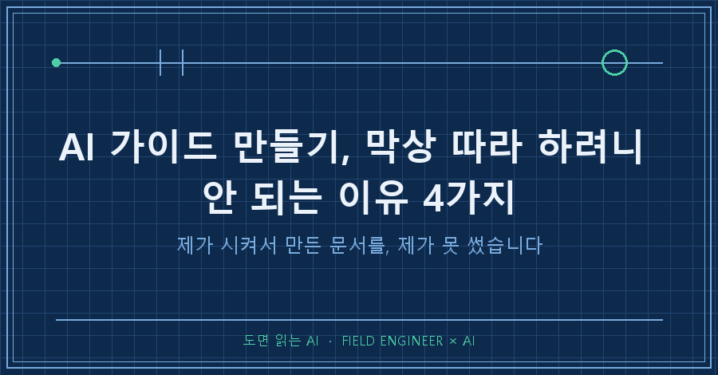
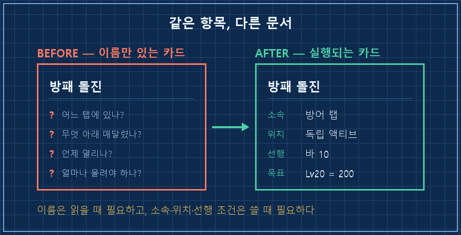
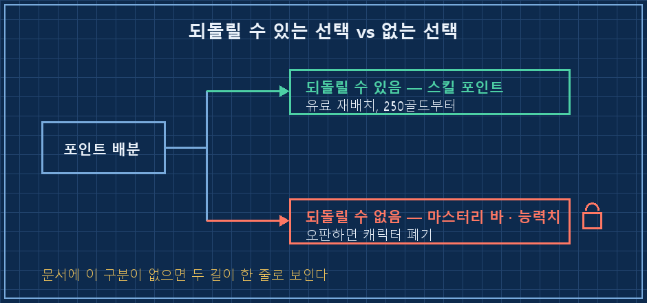
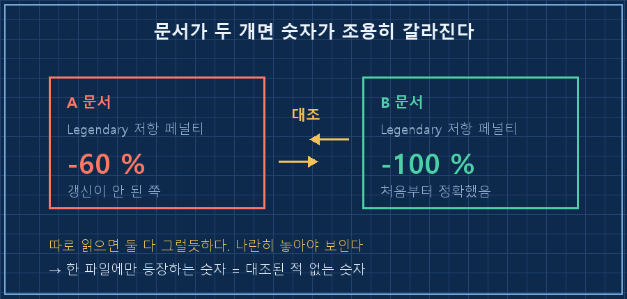

AI 가이드 만들기를 주말에 한 번 해봤어요. 게임 공략인데, 취미라 마음 편히 시킨 거였습니다.
그런데 화면 앞에 앉아 그대로 따라 하려니까 손이 안 움직이더라고요. 내용이 틀린 게 아니었어요. 다 맞는 말인데 실행이 안 됐습니다.
원인은 늘 같은 자리에 있습니다.
AI가 만든 문서는 "무엇을"은 잘 적는데 "어디서·얼마나·되돌릴 수 있는지"를 안 적어요. 이 세 가지가 빠지면 읽을 수는 있어도 실행은 못 합니다. 여기에 문서가 여러 개가 되는 순간 네 번째 구멍이 하나 더 생기고요.
설비 쪽에서 십오 년을 굴렀는데, 그동안 배운 것 중 하나가 절차서 반려 사유예요. "이거 어디 붙어 있는 건데요?" 이 한마디가 나오면 그 절차서는 다시 써야 합니다. 내용이 맞고 틀리고는 그다음 문제고요.
제가 그 소리를 제 문서한테 하고 있었습니다..
기준 시점은 2026년 8월이고, 문서·절차서·계획표를 AI한테 시키는 상황이면 도구가 뭐든 그대로 적용됩니다.
1. 첫 번째 반려 — "점차"라고 적혀 있으면 못 씁니다
처음 받은 문서에는 이런 줄들이 있었어요. 원문 그대로 옮깁니다.
| Onslaught (돌격) | 1→점차 | 좌클릭 주력기 |
- 나머지 스킬은 대부분 1포인트만, 남는 포인트는 마스터리 바에 붓는다.
- 5~6포인트마다 1포인트 체력 투자"점차", "대부분", "5~6포인트마다".
문장으로는 멀쩡한데, 실제로 포인트를 찍는 순간엔 아무 도움이 안 됩니다. 지금 이 화면에서 몇 점을 어디에 넣으라는 건지가 없거든요.
그래서 다시 시켰어요. 레벨 한 칸마다 3점을 어디에 넣는지 전부 확정하라고요.
결과는 레벨 9부터 40까지 한 줄에 한 레벨씩, 41부터 85까지는 구간표로 나왔습니다. 검산도 같이 붙었어요. 40레벨 누적 117점, 50레벨 147점, 85레벨 252점에 퀘스트 보상 30점을 더해 282점. 게임이 실제로 주는 총량과 맞아떨어졌고요.
실행 문서에서 "점차"는 미완성 표시입니다. 사람이 쓸 때는 겸손한 표현이지만, AI가 쓰면 그냥 계산을 안 한 자리예요.
2. 두 번째 반려 — 이름만 있고, 목표 숫자도 없었어요
두 번째 판을 받고 게임을 켰는데 이번엔 다른 데서 막혔습니다.
"방패 돌진"을 찍으라는데 그게 화면 어디에 있는지를 모르겠는 거예요. 스킬 창은 탭이 여러 개고, 각 탭 안에서 스킬은 세로로 매달려 있어서 부모를 찍어야 자식이 보이는 구조인데, 문서에는 이름만 적혀 있었어요.
제가 AI한테 남긴 말이 이거였습니다.
쉴드 차지니 뭐니 어떤 클래스(마스터리)인지 표현을 안 해놔서
게임에서 못 찾겠다세 번째 판에서 표를 이렇게 바꿨어요.
| 스킬 | 어디에 있나 | 필요 조건 | 무슨 스킬인가 |
|---|---|---:|---|
| 방패 돌진 | 🛡️방어 탭 · 독립 액티브 | 바 10 | 돌진해 들이받고 스턴 |
| └ 교란 | 방패 돌진 아래 | 바 24 | 최대 6명 타격 |
| └ 열정 | 맹공 아래 (⚔️전쟁 탭) | 바 32 | 공격속도 +16% |
늘어난 건 두 열이에요. 소속과 위치, 그리고 그게 열리는 선행 조건.
이 두 열이 붙고 나서야 문서를 든 채로 화면에서 항목을 찾을 수 있었습니다. 항목 이름은 문서를 읽을 때만 필요하고, 소속과 위치는 문서를 쓸 때 필요하더라고요.
같은 반려에 하나가 더 붙어 있었어요. 능력치를 어떻게 올릴지가 "힘 위주로, 가끔 체력"처럼 비율로만 적혀 있었거든요.
비율은 읽을 때만 이해되지 확인이 안 됩니다. 지금 내 수치가 충분한지 모자란지 판정할 기준이 없으니까요. 그래서 시점별로 도달해 있어야 할 절대 숫자를 달라고 요구를 바꿨습니다.
| 레벨 | 목표 힘 | 목표 체력 |
|---:|---:|---:|
| 8 | 119 | 695 |
| 20 | 200 | 1,250 |
| 40 | 356 | 2,424 |
| 85 | 706 | 4,180 |
이제는 화면의 숫자와 표의 숫자를 그냥 비교하면 됩니다. 낮으면 덜 넣은 거고, 높으면 다른 데를 굶긴 거예요.
목표치가 숫자로 박히는 순간, 문서가 읽을거리에서 점검표로 바뀝니다.
마음에 들었던 건 AI가 계산 전제를 같이 적어줬다는 점이에요. 체력 기본값 하나가 커뮤니티 통설이라 원문 확인이 안 됐는데, 그걸 숨기지 않고 "이 값을 전제로 계산했으니 화면과 차이가 나면 그 차이만큼 평행이동해서 보라"고 써놨더라고요. 미확인 값을 확인된 값처럼 적는 것보다 이쪽이 백 배 낫습니다.

3. 제일 비싼 구멍 — 되돌릴 수 있는지를 안 적는다
세 번째 판을 검토하다 등골이 서늘했던 대목이 있어요.
이 게임은 스킬에 잘못 넣은 점수는 돈을 내고 뺄 수 있습니다. 처음엔 250골드고요. 그런데 마스터리 바와 능력치에 넣은 점수는 회수 불가예요. 영원히 못 뺍니다.
| 항목 | 되돌리기 | 잘못 넣으면 |
|---|---|---|
| 스킬 포인트 | 가능 (유료, 250골드부터) | 돈 내고 재배치 |
| 마스터리 바 | 불가 | 캐릭터 폐기 |
| 능력치 포인트 | 불가 | 캐릭터 폐기 |
첫 번째 판에는 이 구분이 아예 없었어요. 그러니까 저는 되돌릴 수 없는 선택을 되돌릴 수 있는 선택과 똑같은 무게로 하고 있었던 겁니다.
이걸 알고 나니 순서 자체가 바뀌었습니다. 원래 계획은 공격 계열 바를 32까지 먼저 올리는 거였는데, 실제로 후반에 죽는 원인은 화력 부족이 아니라 생존 부족이고 생존 기술이 전부 방어 계열 바 위쪽에 몰려 있었거든요. 그래서 방어 쪽을 먼저 32까지 채우고 공격은 나중에 몰아치는 순서로 갈아엎었어요.
되돌릴 수 없는 항목이 표시되지 않으면, 계획의 순서를 검토할 이유 자체가 안 생깁니다.
절차서에서는 이게 훨씬 무섭죠. 지우면 복구되는 항목과 한번 손대면 못 되돌리는 항목이 같은 목록에 나란히 적혀 있는 문서.. 다들 한 번쯤 보셨을 거예요.

4. 문서가 두 개가 되는 순간 생기는 네 번째 구멍
같은 주제로 문서를 하나 더 만들다가 발견했습니다. 최고 난이도에서 캐릭터가 받는 저항 페널티가 한쪽 문서에는 −60, 다른 문서에는 −100으로 적혀 있었어요.
A 문서 : Legendary 저항 페널티 −60%
B 문서 : Epic −40% / Legendary −100% ← 정확찾아보니 −100이 맞았고, B 문서는 처음부터 정확했습니다. 한쪽만 어긋나 있었던 거예요.
같은 폴더에 나란히 있는 문서 두 개가 다른 숫자를 말하고 있었는데, 각각을 따로 읽을 때는 둘 다 그럴듯해서 아무 위화감이 없었습니다.
문서를 늘리면 지식이 늘어나는 게 아니라 분기점이 늘어납니다. 갱신은 대개 한쪽에만 되거든요.
같은 세션에서 조각 개수 표기도 한쪽은 "가변 3~8", 다른 쪽은 "5"로 갈려 있는 걸 하나 더 찾았습니다. 하루에 두 건이면 적은 게 아니죠. 여러분 폴더의 문서 두 개는 같은 숫자를 말하고 있을까요?

5. 그래서 지시문에 이 네 줄을 붙였습니다
정리하면 요구는 네 개예요. AI 가이드 만들기를 시킬 때 저는 이걸 지시문 끝에 통째로 붙여둡니다.
1. 모든 항목에 "어디에 있는지"(소속·화면 위치·상위 항목)를 함께 적어라.
2. 수치 목표는 비율이 아니라 시점별 도달해야 할 절대값 표로 적어라.
3. 되돌릴 수 있는 항목과 없는 항목을 구분해 표시하고,
되돌릴 수 없는 것은 순서를 먼저 검토하라.
4. 확인 못 한 값은 "미검증"으로 표시하고, 무엇을 전제로 계산했는지 적어라.받은 문서는 네 문항으로 확인합니다. 전부 예가 나와야 통과예요.
- [ ] 아무 항목이나 하나 짚었을 때, 그것을 어디서 찾는지가 문서 안에 있는가
- [ ] "점차·대부분·적당히"로 끝나는 줄이 0개인가
- [ ] 되돌릴 수 없는 항목에 표시가 있는가
- [ ] 확인 못 한 값에 미검증 표시와 전제가 붙어 있는가
문서가 두 개 이상이면 숫자 대조를 하나 더 돌립니다. 같은 폴더에서 숫자가 붙은 줄만 뽑아 파일별로 늘어놓는 정도예요.
import re, pathlib
hits = {}
for f in pathlib.Path(".").glob("*.md"):
for line in f.read_text(encoding="utf-8").splitlines():
for n in re.findall(r"[−-]?\d+(?:\.\d+)?%", line):
hits.setdefault(n, set()).add(f.name)
for n, files in sorted(hits.items()):
if len(files) == 1:
print(n, "→", files) # 한 파일에만 있는 값 = 대조된 적 없는 값한 파일에만 등장하는 숫자가 위험합니다. 대조된 적이 없다는 뜻이거든요.
받았던 질문 두 개
Q. "점차"라고 쓰지 말라고 하면 AI가 억지로 숫자를 지어내지 않나요?
그게 제일 걱정되는 부분이라 4번을 같이 넣습니다. 확정하라고만 하면 지어낼 여지가 생기지만, "확인 못 한 건 미검증으로 표시하고 전제를 적어라"를 붙이면 모르는 자리가 그대로 드러나요. 이번 문서에서도 두 항목이 미검증으로 남았고, 저는 그게 실패가 아니라 정상이라고 봅니다. 참고 위키가 접속 차단이 걸려서 열두 번을 우회 검색하고도 못 채운 값이었거든요.
Q. 이 정도로 요구하면 문서가 너무 길어지지 않나요?
길어집니다. 표 두 개가 통째로 늘었어요. 대신 문서를 든 채로 화면 앞에서 헤매는 시간이 줄었습니다. 저는 이 교환을 계속할 생각이에요. 읽기 좋은 문서와 실행되는 문서는 애초에 다른 물건이더라고요!
다음 글에서는 이 네 줄을 붙이고도 남는 문제, 그러니까 AI가 문서를 갱신할 때 옛날 판을 어떻게 처리하느냐를 다뤄볼게요.
지시문에 붙여 쓰는 문장들은 makefield.ai에서 계속 손보는 중입니다.
태그: #AI가이드만들기 #AI절차서작성 #AI문서프롬프트 #AI가만든자료검수 #AI매뉴얼작성 #AI에게일시키기 #AI결과물검수 #프롬프트작성법 #AI문서정리 #AI체크리스트 #AI에이전트 #개인AI에이전트 #AI실무활용 #현장엔지니어 #도면읽는AI